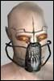

| Author | Thread |
MIL
Phear Leet
Registered: Sep 2002
Posts: 109 | even if the next patch isnt nt luv it would be nice that most of the patch is dedicated to the nt
they can do other profession fixes with ours but as long as they live up to there promises |
Babadi
Phear Leet
 Registered: Dec 2001
Posts: 111 | Hey Kopo, paste that over to the NT forums. It's a great listing of the promises we've benn made. 14.8 can't be to far away, I hope (14.7.5 now, jeez).
We need that list made sticky for easy reference by the people that made the promises. |
Nargil
Phear Leet
 Registered: Mar 2002
Posts: 97 | NT are not gimp, they have enough love i think...
U just need a lot of money/luck for have a good NT |
Romaker
Leetas
 Registered: Jan 2002
Posts: 48 | only red first page but Hence Most Dmg in Short Time. They are speaking of your Power Nukes look at Last Word up to 9k DMG. Whats it take 8 seconds to cast big deal cast that 2 times and your golden that is more dmg in 16seconds then most anyone unless they get lucky and hit a 10k AS.
I dont think they meant NT to be most powerful in game cause if so that is just retarted they are Nano Wizzes not Fighters. They should be the most powerful nano users which they currently arnt bad besides MPs since they got Mohcans and such. However being the biggest dmg dealers no way. If they did that it would just contradict all other classes that were meant for dmg and if they made NTs the most powerful it would be safe to say FC=Bankrupt cause I know and you NTs all know Thousands would leave. |
Mortalbane
LeetRegistered: Dec 2002
Posts: 8 | bump |
ONYNEXESS
Leetas
 Registered: Nov 2002
Posts: 5 | Hmm I like this topic.
Just a few things to point out to all you NTs about NT luv.
1. It was posible to instantly cast the pest nano, and this brought us up to the #1 damage dealers in the game, can you guess what happened  Nano init was nerfed past 1.2k in that skill. It is damn near imposible to get all the items needed to do it but it was possible and therefore nerfed.
2. Don't know about the other proffesions on this one, but how many out there are getting "waiting for previouse nano to complete itself" or somthing along those lines, for up to 10 seconds after the recharge has completed, this bug alone has made us the worst damage dealers in the game WHEN IT HAPPENS.
This is a fatal bug for NTs that needs to be fixed before ANYTHING else is done to and for NTs.
3. Why is it that when we get some so called luv it get nerfed or bugged shortly after?
Just my $0.02 agian  |
Romaker
Leetas
Registered: Jan 2002
Posts: 48 | I will agree there Sexy about the Waiting to complete everyone gets that I even get it on my new enforcer when I mongo and then try raging or somthing. |
steppenrazor
SoleetRegistered: Jun 2002
Posts: 85 | quote:
Originally posted by Jayde
Actually, Funcom doesn't mind numbering double-digets... 14.7.14 is a possibility.
-Jayde
Oh good point. Well we're ducked. Guess the only thing left for us NT is to pray.
"Oh great and mighty Devs, stay thine nurf bat. Insted into thine C++ codex and shower forth love and cool items apon my profession. Oh Great Devs, I beesheche thee! Bring forth love apon my profession, so that all thine other creations might know thine glory, and not laff whence i call out 'I am Not a gimp!'
Amen"
Steppenrazor |
hhj
Phear Leet
 Registered: May 2002
Posts: 73 |  Hmmm... Hmmm...quote:
Originally posted by Kunn ~ Flintforge
only red first page but Hence Most Dmg in Short Time. They are speaking of your Power Nukes look at Last Word up to 9k DMG. Whats it take 8 seconds to cast big deal cast that 2 times and your golden that is more dmg in 16seconds then most anyone unless they get lucky and hit a 10k AS.
Hmmm, you got something wrong here 
The recharge time on LW is 8 sec. and the cast time 20 sec. And it isnt easy to cast LW without special items... 
Anyway I hope Fun Com will finally come up with a NT Fix. |
Centurion3
Supa Leet
 Registered: Aug 2002
Posts: 588 | quote:
Originally posted by Kunn ~ Flintforge
only red first page but Hence Most Dmg in Short Time. They are speaking of your Power Nukes look at Last Word up to 9k DMG. Whats it take 8 seconds to cast big deal cast that 2 times and your golden that is more dmg in 16seconds then most anyone unless they get lucky and hit a 10k AS.
I dont think they meant NT to be most powerful in game cause if so that is just retarted they are Nano Wizzes not Fighters. They should be the most powerful nano users which they currently arnt bad besides MPs since they got Mohcans and such. However being the biggest dmg dealers no way. If they did that it would just contradict all other classes that were meant for dmg and if they made NTs the most powerful it would be safe to say FC=Bankrupt cause I know and you NTs all know Thousands would leave.
errr, I think we sacrificed health for damage, and defense for offense... we also had range for awhile but they nerfed that... Seeing how NT's has the lowest defensive abilities they should have the most damage, since it says thats all their damage is about... |
hhj
Phear Leet
Registered: May 2002
Posts: 73 | quote:
Originally posted by Kunn ~ Flintforge
I will agree there Sexy about the Waiting to complete everyone gets that I even get it on my new enforcer when I mongo and then try raging or somthing.
And now imagine what happens to a class that lives and dies by nano programs
You get stuck with 5 nano bars unable to do anything (No beam you can swing  ).
I would finally like to hear an answer from Fun Com. |
Miir
Supa Leet
 Registered: Nov 2001
Posts: 702 | Seeing how NT's has the lowest defensive abilities they should have the most damage
Actually, Enginners have the 'worst' defensive abilities.
NT evade costs are similar to Doctor but docs don't have any evade buffs.
Using your logic, MAs and Fixers should do the least damage, followed closely by Soldiers and Enforcers. |
hhj
Phear Leet
Registered: May 2002
Posts: 73 | quote:
Originally posted by Miir
Seeing how NT's has the lowest defensive abilities they should have the most damage
Actually, Enginners have the 'worst' defensive abilities.
NT evade costs are similar to Doctor but docs don't have any evade buffs.
Using your logic, MAs and Fixers should do the least damage, followed closely by Soldiers and Enforcers.
Ohh... Miir
Please find yourself another thread to show the world how much spare time you have and how much you like to argue
We are just trying to get some answers here.
*winks & no flames* |
Centurion3
Supa Leet
Registered: Aug 2002
Posts: 588 | quote:
Originally posted by Miir
Seeing how NT's has the lowest defensive abilities they should have the most damage
Actually, Enginners have the 'worst' defensive abilities.
NT evade costs are similar to Doctor but docs don't have any evade buffs.
Using your logic, MAs and Fixers should do the least damage, followed closely by Soldiers and Enforcers.
Granted, but engineers dont rely on doing damage themselfs, they're using their bot for that. or for the main part of it anyway. |
Miir
Supa Leet
Registered: Nov 2001
Posts: 702 | quote:
Originally posted by Demona66
Ohh... Miir
Please find yourself another thread to show the world how much spare time you have and how much you like to argue
I see, so you're not really interested in accurate information.
There was nothing argumentative in my post.
I was stating a fact and pointing out the flawed logic in "worst defense = best offense"
In a normal team mission, manually log your nuke damage and run AODD. I think you'll be surprised.
Playing a NT without a weapon makes about as much sense as playing a soldier without using any nanos. |
Jekyll
Phear Leet
 Registered: May 2002
Posts: 172 | quote:
Originally posted by Kunn ~ Flintforge
only red first page but Hence Most Dmg in Short Time. They are speaking of your Power Nukes look at Last Word up to 9k DMG. Whats it take 8 seconds to cast big deal cast that 2 times and your golden that is more dmg in 16seconds then most anyone unless they get lucky and hit a 10k AS.
Ok, there has got to have been some NTs laughing at this one |
Jekyll
Phear Leet
Registered: May 2002
Posts: 172 | quote:
Originally posted by Miir
Playing a NT without a weapon makes about as much sense as playing a soldier without using any nanos.
Not according to FC... |
Miir
Supa Leet
Registered: Nov 2001
Posts: 702 | quote:
quote:
--------------------------------------------------------------------------------
Originally posted by Kunn ~ Flintforge
only red first page but Hence Most Dmg in Short Time. They are speaking of your Power Nukes look at Last Word up to 9k DMG. Whats it take 8 seconds to cast big deal cast that 2 times and your golden that is more dmg in 16seconds then most anyone unless they get lucky and hit a 10k AS.
--------------------------------------------------------------------------------
Ok, there has got to have been some NTs laughing at this one
__________________
Kristopher MyName Vallegos - Rubi-Ka
70+ Nano Technician
- Make pure PvP server. 25% suppression in major cities, 0% everywhere else. And no level restrictions
- Remove PvP titles from the game
4 word replies get lost between quotes and 17 line sig files
A.S.S.H.O.L.E.: Artificial Synthetic Soldier Hardwired for Observation and Logical Exploration
T.U.R.D.: Transforming Unit Responsible for Destruction
N.E.R.F.: Networked Entity Responsible for Fighting
quote:
--------------------------------------------------------------------------------
Originally posted by Miir
Playing a NT without a weapon makes about as much sense as playing a soldier without using any nanos.
--------------------------------------------------------------------------------
Not according to FC...
__________________
Kristopher MyName Vallegos - Rubi-Ka
70+ Nano Technician
- Make pure PvP server. 25% suppression in major cities, 0% everywhere else. And no level restrictions
- Remove PvP titles from the game
A.S.S.H.O.L.E.: Artificial Synthetic Soldier Hardwired for Observation and Logical Exploration
T.U.R.D.: Transforming Unit Responsible for Destruction
N.E.R.F.: Networked Entity Responsible for Fighting
Last edited by Miir on December 11th, 2002 at 21:14 |
MIL
Phear Leet
Registered: Sep 2002
Posts: 109 | kunn where do u get your info bro last word takes 20secs to cast and has an 8sec recharge so thats 28secs for a nuke that will prolly do like 4-6k at best if i was any other prof i could have done twice if not 3times that much damage in 28secs
so plz we need luv it is so obvious
and we should do the most damage there called nukes for a reason if i was a country and i nuked someone it would do more damage than just some regular weapons
our nukes are pure crap and those new nukes just implemented seem to have very high reqs which prolly makes them not to much better than the ones we already got in terms of usefulness |
svendor
Phear Leet
 Registered: Dec 2002
Posts: 104 |  8 seconds 8 secondsThank you for making me smile. |
All times are GMT.


 Last Thread Next Thread
Last Thread Next Thread 
 December 11th, 2002 06:04
December 11th, 2002 06:04